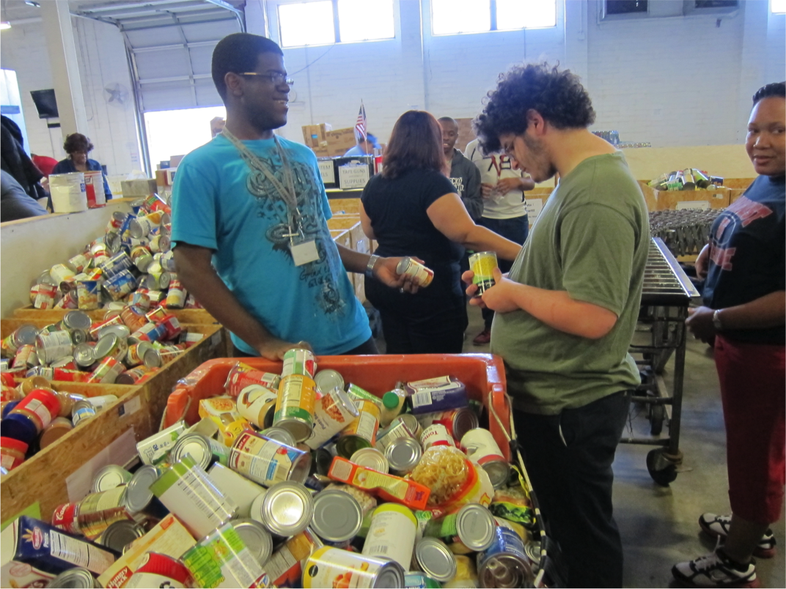

CONSIDERING COMMUNITY SERVICE
Building Self-Determination Skills for Youth with Autism Spectrum Disorder
Authors: Jaimie Timmons, Agnes Zalewska, Allison Hall and Sheila Fesko
Introduction
Limited employment outcomes of young adults with autism spectrum disorder (ASD) and a recent surge in incidence of ASD diagnosis indicate a need for more effective school-to-work transition interventions. Community service opportunities can support young adults with ASD to gain skills, explore careers, and develop networks that can lead to meaningful employment.
This research-to-practice toolkit offers practical solutions for transition coordinators, educators, and others who want to implement community service activities that build skills for youth with ASD. This publication addresses building self-determination skills. Other publications in the toolkit focus on career exploration and social skills.
The source of much of the information presented below is qualitative research conducted in Florida, completed as part of the Service Works for Youth with Autism project. Additional information is derived from other Institute for Community Inclusion work on transition planning and service contributing to employment for youth and adults with disabilities.
Service Works for Youth with Autism
Service Works for Youth with Autism is a three-year initiative that explored the impact of community service on career development, self-determination, and social skill building for youth with ASD in two Florida counties. Duval County includes the city of Jacksonville and is located in the northeastern part of the state. Lee County includes the city of Fort Myers and is in a southwestern coastal region.
During the five-month structured community service intervention (called Project Impact), students with ASD mapped their communities, collaboratively identified a community problem, and developed and implemented a subsequent community service project.
What is Project Impact?
Project Impact [PDF] was created by the Florida Governor’s Commission on Volunteerism and Community Service, Volunteer Florida. It is an intensive five-month community service experience planned and implemented with youth with disabilities. Project Impact uses a comprehensive guide to organize its activities.
Project Impact youth are guided by trained AmeriCorps facilitators and mentors. These mentors are AmeriCorps members serving formal terms. Other key players may include personnel from a local disability organization and classroom teachers who serve as site coordinators and help support project activities in between meetings.
What is AmeriCorps?
AmeriCorps is one of three core programs of the Corporation for National and Community Service. AmeriCorps programs provide opportunities for Americans to make an intensive commitment to service. The AmeriCorps network of local, state, and national service programs engages more than 80,000 Americans in projects around the nation each year.
Project Impact starts with a student-led community mapping exercise, in which students identify a community problem and the resources needed to address it. The students develop a plan for a service activity that will address the problem, and then implement the service activity.
Each month, students meet with peers and their AmeriCorps facilitator. Together, the students outline their roles, their responsibilities, and exactly how the service project will unfold. They participate in regular reflection activities that allow them to consider the skills they are developing and the impact the students are having in their community.
Through Project Impact, Florida AmeriCorps programs, in conjunction with a range of community partners, have implemented 40 community service projects with 500 youth with a range of disabilities in 12 Florida counties. Service projects have included literacy efforts and tutoring, grounds beautification at local parks and zoos, cooking meals for those experiencing hunger, toiletry and canned food drives, recreational activities at assisted living facilities, and even restoring oyster beds.
Where we got this information
The findings in this publication are based on 23 in-person interviews with a range of participants in the Service Works for Youth with Autism project. Participants were asked about their experience in the project as it relates to employment.
Interviewees included six students, six teachers/school staff, three Project Impact facilitators, five mentors, and three parents. Eight participants were from a Lee County high school, seven were from one high school in Duval County, and eight were from a second high school in Duval County. The students who participated in the interviews were of diverse ethnic and cultural backgrounds, ages, and severity of disability. All six students interviewed were male.
The service projects

School #1 in Jacksonville, FL conducted a school-wide food drive, engaging the larger school community in the effort. They created posters, drop boxes, and announcements for the morning school news. They delivered, sorted, and stocked the food at a local food pantry.
School #2 in Jacksonville had many students interested in animals and animal care. They prepared animal foods and beautified grounds at the Jacksonville Zoo. A zoo contact visited classrooms to discuss the range of jobs offered at the zoo.
In school #3 in Fort Myers, students prepared a special lunch for fellow classmates who experience food insecurity. They engaged the junior ROTC (Army Reserve Officers’ Training Corps) students in the lunch, and all three groups participated in recreational, team-building activities
Findings: Community service can have an impact on self-determination
What is self-determination?
Self-determination is a characteristic that leads a person to make choices and decisions based on their own preferences and interests, to monitor and regulate their own actions, and to be goal-oriented and self-directing.
The service experience described here allowed students to build their self-determination skills, which are critical for future workplace success. Students had opportunities to:
- practice decision-making
- improve self-confidence
- experience pride and ownership of the community service process
- become providers of solutions rather than recipients of services
Practice decision-making.
Choosing the service project. Students were able to practice decision-making throughout the planning and implementation of the service project. Perhaps the biggest decision was where to serve. Facilitators used a voting process to ensure that each student had a choice as to which project was most important to him/her. This voting process gave students a voice, and the open opportunity to share their opinions and advocate for what they wanted.
“[Choosing the service project at the zoo] was definitely student-driven. They didn’t let anybody sway them in any other direction. It was the zoo.” Teacher
Deciding which students will do which tasks. Once projects were chosen, the students came up with the ideas for flyers, posters, and social media promotion of the event. The teachers supported it, but as one mentor put it, “these were their ideas,” and the students decided who would do what tasks.
However, there seemed to be variation in impact on self-determination based on the student’s level of support need. Facilitators said that it was a challenge to build leadership opportunities for those students who had higher support needs, and they had to employ additional strategies (see section entitled “What you can do” below for more).
Improve self-confidence.
Becoming aware of one’s strengths. Students showed their confidence by telling interviewers about tasks they excelled at, often discovering this skill for the first time.
“You could tell each time in [the students’] body language that they were more confident with people… Project Impact facilitator
Acting in leadership roles. As part of the community service experience, students demonstrated emerging leadership skills and began giving direction to others. Acting in leadership roles was another opportunity to build student self-confidence in their own abilities.
“He would make a lot of comments about being a good manager, and how it wasn't bossing people around, but helping them—and not telling people what to do, but helping them do their job better. I think he actually said that in those words, so that was really surprising. That was good.” Teacher
Experiencing pride and ownership of the community service project. Students became personally invested in the service projects. One teacher was moved by the students’ level of investment, which he found unexpected: “A lot of them are very …apathetic—so seeing them care—just caring about something other than what they're going to watch or play when they get home was a big deal.”
In fact, there was so much pride, he went on to explain that with one student in particular he “actually had to turn it into a lesson of not being too boastful.”
“It was as if he made a commitment to it, and he had to be here to uphold his commitment. But this time, it was a little different. It was like, ‘I’ve got to do this because of something outside of me.’ Not ‘this is fun. I want to do it.’ But this was a, ‘I need to do this. I need to participate in this project.’…. He specifically said—those were his words—‘I need to be there for my community service project.’”Project Impact parent
Becoming providers of solutions rather than recipients of services. Hands-on participation and completion of the project made the youth feel that they were important and capable contributors. Seeing positive outcomes of their work gave them a sense of empowerment and that they were capable of doing something important for their communities. This “giving back” contributed to a more positive perception of their own abilities.
“…in spite of what kind of disability I have, I'm still able to give, and I'm still here to do my community service hours.”Project Impact student
For youth participants, their traditional role as students in special education became reversed. Instead of being recipients of services, they became problem solvers within the communities in which they are members.
“Some students never thought they could help anybody else. So they were able to help...I think it just opened them up to want to help and be a part of their community…So I think they got that perspective, that now I am a part of a community. I make up this community.”Teacher
Creating community service activities: Three easy tips
Creating community service opportunities can be overwhelming if you don’t know where to start. Consider the following three tips to begin:
- Identify your local service program.
- Do it yourself!
- Be inclusive.
#1. Identify your local service program.
Collaboration with service programs can benefit schools as well as the service program. While schools can create community service opportunities for youth that allow them to gain valuable experience, service programs gain access to qualified, committed participants. The local service community may be unfamiliar with the school and disability community, and vice versa. Therefore, a critical first step is learning more about each other.
Contact your state’s service commission to help you identify service programs in your community. They also may be able to share examples of the types of partnerships occurring in other parts of the state.
Once you’ve identified a local service program, set up a short, informal meeting. Be prepared to explain your school, students, and the goals you hope to achieve.
Invite service staff to meet school staff and students. Ask them to present an overview of the community service options other youth have engaged in recently.
Reassure service staff that you will help with student support needs. Remember, you are the one that likely knows your students the best. The service program will rely on you to offer accommodations.
#2. Do it yourself!
If you want to create community service experiences on your own, here are some tips to consider.
Create structure. Establish a timeline for the service project, and stick to it. Meeting weekly until the service project is complete will promote continuity, especially for students who also have intellectual disabilities.
Create formal agendas for each planning meeting that ensure full participation. Allow time for discussion about how each activity is building a skill needed for employment.
Incorporate regular reflection activities. Such activities should connect each phase of the experience to skills gained and future career options.
Use team-building exercises to increase peer connections, promote group problem-solving, and build decision-making skills. See below for some ideas.
Use committees to plan and implement different aspects of the project. A marketing committee might be in charge of letting others know about your project. A student interested in art might be elected to create posters. A student interested in photography might be in charge of documenting the project for the school newspaper.
Coordinate a service day for students at an organization or within your school community. Assess the physical space and attitudes/sensitivity of staff at the service location in advance. Provide accommodations and etiquette training as needed.
#3. Be inclusive.
Following these essential elements in inclusive service will allow you to maximize each student’s learning and his or her role in the project. According to "Kumin and Lee (2007)", you can create inclusive service opportunities through consideration of the following:
- PREPARE: Introduce students to the issues that will be addressed, select appropriate projects, and provide background info and training. In the preparation phase, teachers, students, and a community agency begin communication regarding possible project ideas, choosing a real community need, linking the service project to the curriculum, securing necessary funds and administrative support, and writing an action plan.
- ACT: Engage in service to help others in the community. This action moves issues from students’ “heads” to their “hands.” In the action phase, the service project is implemented.
- REFLECT: Look back on the experience, raise and address questions, and assess the project or program. During the reflection, project participants consider the project’s impact on their own learning and career goals and on the lives of those served.
- CELEBRATE: Evaluate the service experience, celebrate accomplishments, and make commitments for the future. In the celebration phase, students take pride in the impact they made and receive recognition for their work.
Now let’s consider ways to ensure that your community service experience builds self-determination skills.
What you can do:
As facilitators of community service projects, remaining aware of intentionally building self-determination during the process is critical. The Center for Self-Determination has defined five principles of self-determination. These are the freedom to make decisions, authority over oneself and one’s resources, support to organize resources in a meaningful way, responsibility, and confirmation of the important role that individuals must play.
Applying self-determination principles to community service
Facilitators can promote self-determination through several small actions that can greatly increase student success.
- Take the opportunity to teach. Discuss the concept of self-determination and provide resources as indicated. Offer some follow-up information and instruction if the student is interested. Organizations such as National Gateway to Self-Determination or the Center for Self-Determination offer a range of instructional resources for both professionals and family members. See “Resources” below for more ideas.
- Clarify expectations and consequences in understandable and accessible terms. It can be easy to assume that students understand basic expectations of the community service project, the reasoning behind it, and consequences if one’s obligation is not fulfilled. However, this may not be the case. Share information about the service site in advance, describe in detail the people who will benefit, and explain what might happen if the students do not show up. This will also serve to increase student investment in the process.
- Be a helper, not a doer. The students should drive not only the decision of where to serve but the entire planning process, from beginning to end. Success requires their active participation. Doing tasks for students does not enable them to handle similar situations in the future. Remain in the facilitator role even if it makes the process slower by encouraging voting processes, allowing time for debate and discussion, and presenting a wide range of choices whenever possible.
- Respect the students’ opinions, even if they are different from your own. If the students do not want to engage in a particular service project, respect these wishes. While you can explain your perspective, the final decision is theirs. Alternatively, allow the students to make decisions, even if they may seem counterproductive. Although this can be challenging for a facilitator, students need to have the “dignity of risk”—the ability to take chances and opportunities even if they might not succeed.
- Always ask for suggestions on how to improve the process. Periodically ask the students for their suggestions and feedback throughout the community service process, especially if any barriers or challenges have arisen. In addition, have a formal assessment or evaluation as you celebrate and reflect on the project’s completion. Ask the students for their suggestions about how to solve problems they encountered.
- Stay focused on accessibility. To the greatest extent possible, facilitators should offer an open and accessible environment where students can make the most informed choices about what service project to chose. For example, using an accessible voting process can ensure every student gets a voice in the choice of project. Facilitators can draw pictures of each community service option on the board and provide each student with sticky notes. Students can place the sticky note next to the image that represents the project of interest. This increases investment of all students in the process.
- Provide opportunities to control money. Create a budget so that students will have choice and control over how to spend it during the community service planning process. For example, if students choose to prepare a meal for a group in need, have them create a shopping list, determine the budget, and go shopping to purchase items with funds allotted.
- Build in opportunities for critical thinking, conflict resolution, and practicing negotiation skills. These are all skills needed in self-determination. For example, consider that some level of conflict is natural in most situations. Teaching an appropriate response to conflict (such as when to seek advice) will determine if there is a positive or negative outcome. Incorporating the time for students to practice negotiating and resolving conflict during the service experience will help them to handle such situations in the future.
- Don't underestimate the importance of an assessment phase. Assessment is a prime opportunity for the facilitator to understand the students’ current levels of self-determination before beginning. Use an allotted time period to assess self-determination skill and knowledge. This may help you to intentionally support specific students. For example, facilitators may have to give students who are less inclined to actively participate creative positions, so that those who do typically lead will not dominate discussions.
Some points to observe during assessment:
- Does the student have a plan in mind?
- Is the student too easily satisfied?
- Do they feel comfortable speaking their mind or asking questions?
- Does the student perceive a range of options and show an understanding of those options?
- Is the student always in agreement—or disagreement?
Reaping the benefits
Focusing on self-determination principles during the community service experience can allow students to:
- become more comfortable and confident.
- improve their ability to navigate the world around them through identifying resources, managing and organizing a job search, and making decisions after evaluating available options.
- increase their power and satisfaction by directing how the project will be implemented and how the budget will be spent.
- take on more responsibility for completing tasks in their adult lives.
The above was adapted from:
Brugnaro, L., & Timmons, J. C. (2007). Tools for Inclusion: Self-Determination: A Fundamental Ingredient of Employment Support. Boston, MA: University of Massachusetts Boston, Institute for Community Inclusion.
Conclusion
Community service for transition-age youth with ASD is a great way to make a big difference in the lives of others, all while your students are developing self-determination skills. Our study described how community service had an impact on students’ self-esteem and sense of themselves as empowered members of society. This level of self-determination is necessary for future employment and community inclusion.
Through consideration of the above strategies, your students can explore careers in your local community, and can practice meeting new people and building relationships, all while filling a critical community need.
Resources
Both the Center for Self-Determination and the National Gateway to Self-Determination offer a number of products for professionals working with youth and adults with disabilities.
This research-to-practice brief highlights key points in supporting self-determination during transition planning. The chart entitled “Promoting Self-Determination in Youth with Disabilities: Tips for Families and Professionals” offers many concrete strategies to integrate during any transition activity, including community service.
Other products in this series
To learn more about how service opportunities can build skills for students with ASD, read the other publications in this toolkit:
- Considering Community Service: Building Social Skills for Youth with Autism Spectrum Disorder
- Considering Community Service: Career Development for Youth with Autism Spectrum Disorder
Acknowledgements
This study was supported by grant R40 MC 22645 from the Maternal and Child Health Research Program, Maternal and Child Health Bureau (Combating Autism Act of 2006, as amended by the Combating Autism Reauthorization Act of 2011), Health Resources and Services Administration, Department of Health and Human Services.
The Institute for Community Inclusion would like to thank our project collaborators: the Florida Governor’s Commission on Service and Volunteering (Volunteer Florida), and the Center for Autism and Related Disabilities (CARD) at the University of South Florida.
Go to top